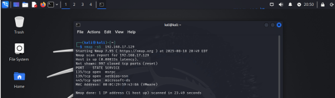
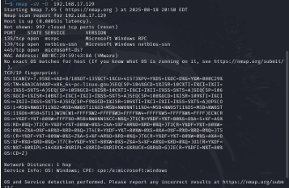
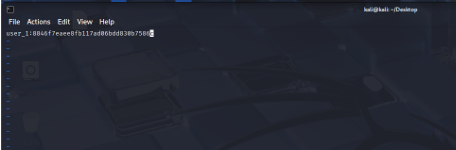
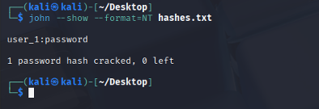
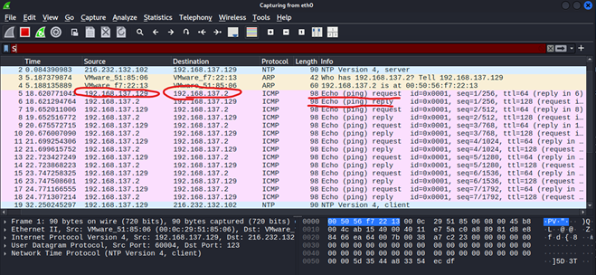

Lab Environment & Setup
- VMware Workstation Player hosting all operating systems used in the lab.
- Windows 11 Pro VM configured as the target client being attacked.
- Kali Linux VM configured as the attacker machine.
- Private virtual network between the two VMs — two-way communication enabled, internet access disabled, following isolated lab best practice.
- Tools used: Metasploitable 3, Command Prompt, Windows PowerShell, Linux Terminal, Wireshark, Metasploit.
Attacks Completed
Attack 1 — Reconnaissance / Scanning
Objective: Enumerate services running on the Windows target.
Tools: nmap, netcat
Result: Identified open ports and running services on the Windows 11 VM, including OS fingerprinting via nmap -sV -O.


Figure 1. Nmap scan results showing open ports and detected services on the Windows 11 target, including OS and service version enumeration.
Attack 2 — Offline NTLM Password Cracking
Objective: Attempt to crack a password offline using captured Windows NTLM hashes.
Tools: John the Ripper
Result: Successfully cracked a hashed password via a simulated dictionary attack (john --format=NT hashes.txt --wordlist=rockyou.txt), recovering the username and cracked password.


Figure 2. John the Ripper output showing successful cracking of NTLM password hashes using a dictionary-based attack with the rockyou wordlist.
Attack 3 — Network Monitoring & Sniffing
Objective: Capture and analyze network traffic between lab machines.
Tools: Wireshark, tcpdump
Result: Captured and analyzed live traffic in Wireshark, including ICMP echo request/reply pairs confirming connectivity between hosts.

Figure 3. Wireshark packet capture displaying ICMP echo requests and replies between lab hosts, confirming active network communication.
Skills Gained
- Network reconnaissance and port/service enumeration
- Offline password hash cracking methodology
- Packet capture and traffic analysis
- Building and isolating a safe, internet-disconnected attacker/target lab environment
Key Takeaway
This lab reinforced how attackers gather information and exploit weak credentials — knowledge that directly informs stronger help desk security practices, from password policy guidance to recognizing early signs of reconnaissance activity on a network.